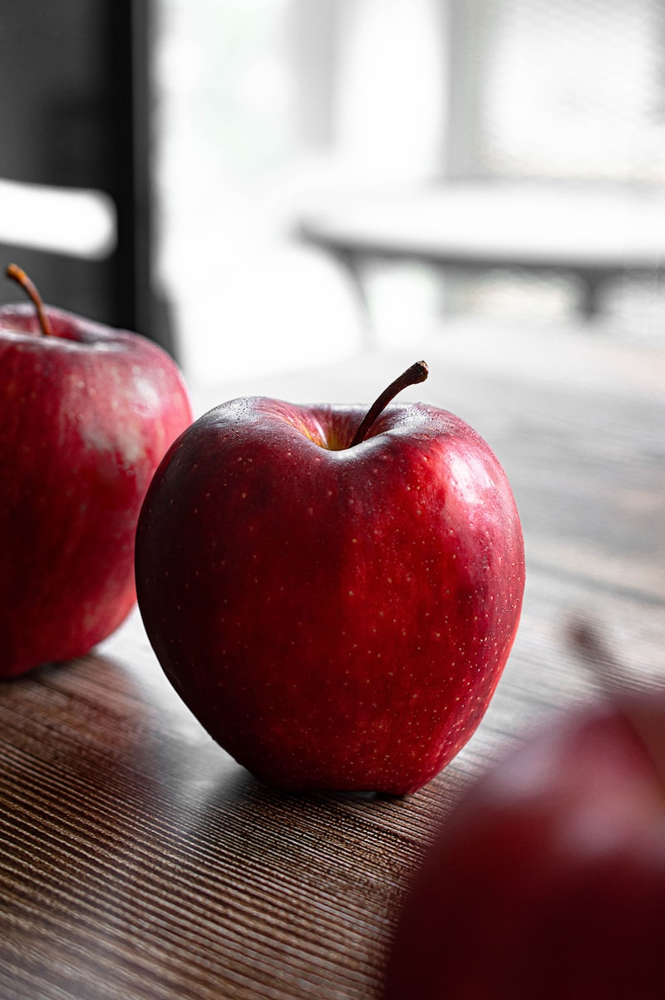
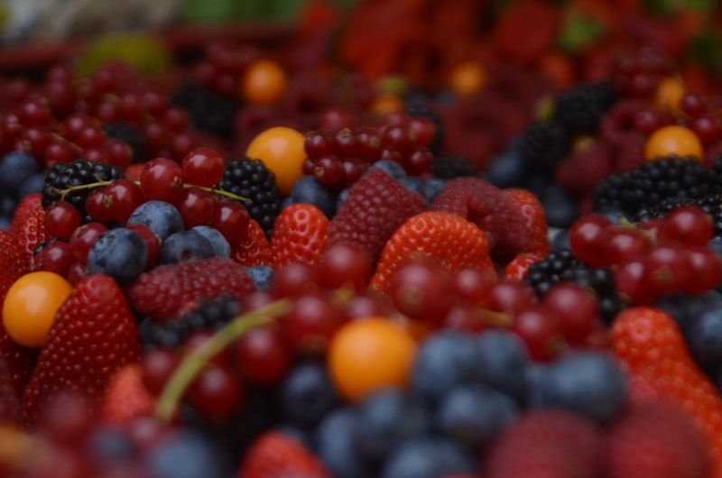
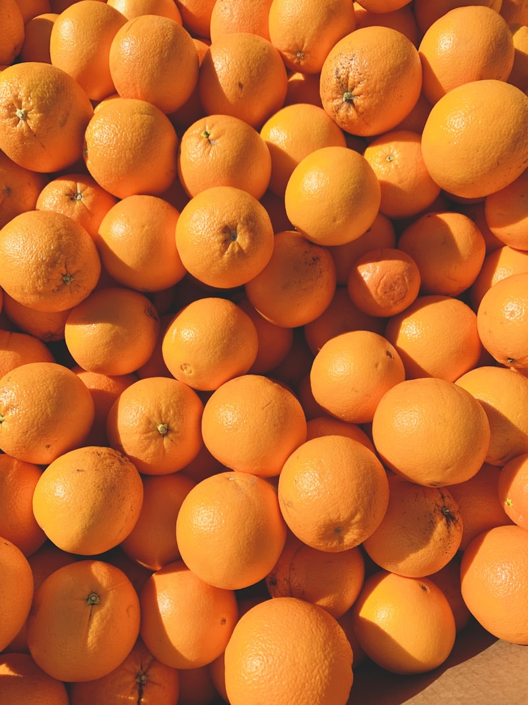
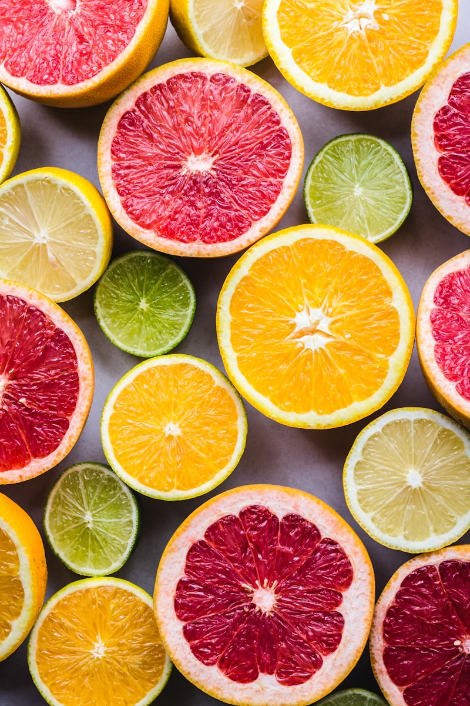
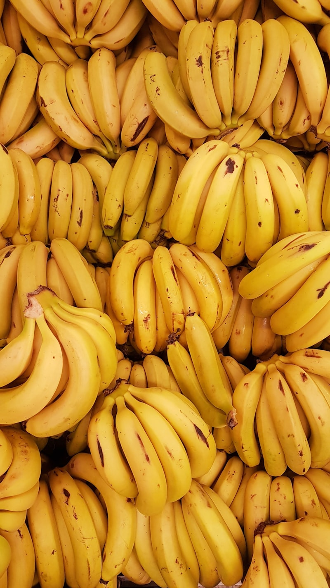
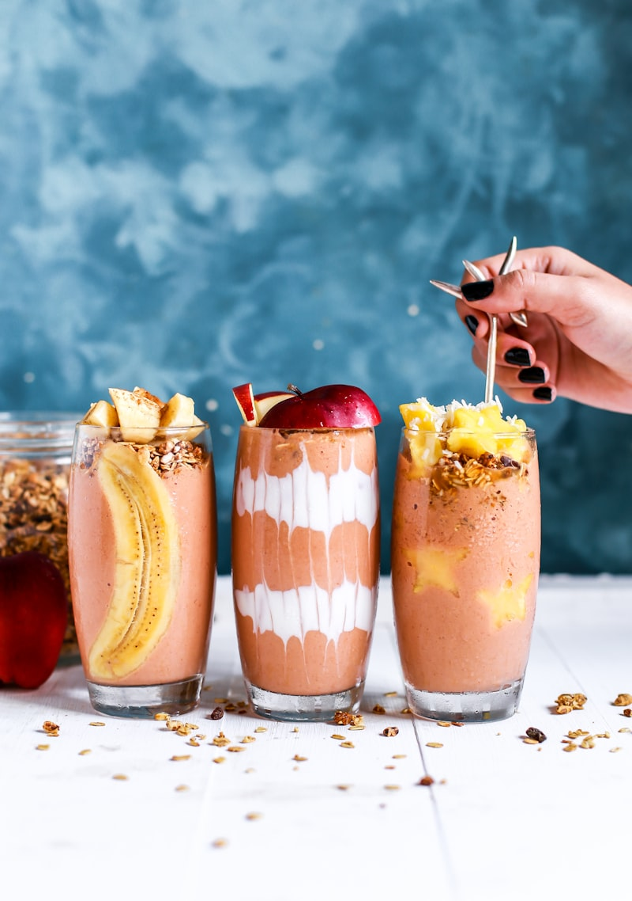
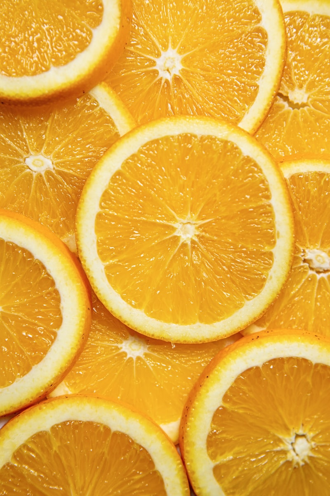

Tu Guía Inteligente de Frutas para el Equilibrio Hormonal
"¿Puedo comer fruta si quiero cuidar mi insulina?"
La respuesta es SÍ — pero con inteligencia.
Las frutas no son tu enemigo. De hecho, son aliadas poderosas: aportan fibra, antioxidantes, vitaminas y minerales que tu sistema hormonal necesita para funcionar correctamente.
El problema nunca fue la fruta — fue NO saber cuáles elegir, en qué cantidad y cómo combinarlas.
Esta guía te da un sistema visual tipo semáforo para que sepas exactamente qué frutas te benefician, cuáles moderar y cuáles limitar:
• 🟢 VERDE — Come libremente (con porción normal)
• 🟡 AMARILLO — Come con estrategia (porción controlada)
• 🔴 ROJO — Consume ocasionalmente (porción pequeña)
4 principios para elegir frutas inteligentes:
• 1️⃣ IG bajo (≤55) — Menor impacto en tu glucosa
• 2️⃣ Rica en fibra — La fibra frena la absorción del azúcar
• 3️⃣ Entera, no procesada — Sin jugos, almíbares ni deshidratada con azúcar
• 4️⃣ Madurez controlada — Más madura = más azúcar libre

⭐ Las Frutas Estrella — Tus Mejores Aliadas
Estas frutas tienen IG bajo, alto contenido de fibra y nutrientes que mejoran directamente tu sensibilidad a la insulina. Conócelas a fondo.

- 🟢 Índice Glucémico: 36 (bajo)
- 🟢 Fibra por unidad: 4.4g (excelente)
- 🟢 Porción ideal: 1 manzana mediana
- ── POR QUÉ ES ESTRELLA ──
- ✅ Rica en pectina — fibra soluble que forma gel y frena la absorción de azúcar
- ✅ Alta en polifenoles — antioxidantes que mejoran la sensibilidad a la insulina
- ✅ Con cáscara aporta quercetina — antiinflamatorio natural
- ✅ Disponible todo el año, económica y versátil
- SIEMPRE cómela con cáscara — ahí está el 50% de la fibra y los polifenoles
- Mejor combinación: manzana + mantequilla de maní = snack hormonal perfecto
- En avena: ralla una manzana verde sobre tu avena con canela — delicioso
- Tip: la manzana verde tiene MENOS azúcar que la roja — elige la verde cuando puedas

- 🟢 Fresas — IG 41 | Porción: 1 taza (8-10 fresas)
- 🟢 Arándanos — IG 53 | Porción: ¾ taza
- 🟢 Frambuesas — IG 32 | Porción: 1 taza
- 🟢 Moras — IG 25 | Porción: 1 taza
- ── POR QUÉ SON ESTRELLAS ──
- ✅ Mayor concentración de antocianinas (antioxidantes) de todas las frutas
- ✅ Las antocianinas mejoran directamente la sensibilidad a la insulina
- ✅ Muy bajas en azúcar comparadas con otras frutas
- ✅ Altísimas en fibra — las frambuesas tienen 8g por taza
- Sobre yogur griego: el combo más simple y poderoso para tu metabolismo
- En avena nocturna: agrégalas frescas o congeladas al preparar la noche anterior
- Congeladas: mantienen TODOS sus nutrientes y antioxidantes — siempre ten en tu freezer
- Como snack solo: 1 taza de fresas o moras es el snack de IG más bajo que existe

- 🟢 Índice Glucémico: 15 (bajísimo)
- 🟢 Fibra por unidad: 10g (extraordinario)
- 🟢 Porción ideal: ¼ a ½ aguacate
- ── POR QUÉ ES ESTRELLA ──
- ✅ Aunque no es dulce, es una FRUTA — la más rica en grasas monoinsaturadas
- ✅ Estas grasas mejoran la sensibilidad a la insulina directamente
- ✅ Alto en potasio (más que el plátano) — mineral clave para el metabolismo
- ✅ La fibra + grasa crean saciedad de 4+ horas
- En tostada de pan de granos: ½ aguacate + huevo + sal marina = desayuno hormonal
- En ensaladas: agrega cubos de aguacate a cualquier ensalada para convertirla en comida completa
- Como acompañante: ¼ aguacate con cualquier plato reduce el impacto glucémico del plato entero
- Guacamole: aguacate + limón + tomate + cilantro + sal = dip perfecto con vegetales crudos

- 🟢 Naranja — IG 43 | Porción: 1 naranja mediana
- 🟢 Pomelo/toronja — IG 25 | Porción: ½ pomelo
- 🟢 Mandarina — IG 42 | Porción: 2 mandarinas
- 🟢 Limón — IG 20 | Uso: ilimitado como condimento
- ── POR QUÉ SON ESTRELLAS ──
- ✅ La vitamina C es esencial para producir cortisol saludable
- ✅ El pomelo/toronja tiene compuestos que mejoran la sensibilidad a la insulina
- ✅ Los cítricos son ricos en hesperidina — flavonoide protector cardiovascular
- ✅ El limón estimula la bilis y apoya la desintoxicación hepática
- SIEMPRE come la naranja entera (a gajos) — NUNCA en jugo. La fibra cambia todo
- El pomelo antes del desayuno puede mejorar tu respuesta glucémica de la mañana
- Agrega limón a TODO: agua, ensaladas, carnes, jugos — mejora sabor + aporta vitamina C
- Mandarina como snack: 2 mandarinas + puñado de nueces = merienda perfecta

- 🟢 Kiwi — IG 39 | Porción: 2 kiwis pequeños
- 🟢 Guayaba — IG 32 | Porción: 1 guayaba mediana
- 🟢 Pera — IG 38 | Porción: 1 pera mediana
- 🟢 Ciruela fresca — IG 39 | Porción: 2 ciruelas
- ── POR QUÉ SON ESTRELLAS ──
- ✅ Kiwi: más vitamina C que la naranja + enzima actinidina que mejora digestión
- ✅ Guayaba: altísima en vitamina C y fibra, casi cero impacto glucémico
- ✅ Pera: rica en fibra soluble, ideal como snack de media tarde
- ✅ Ciruela fresca: bajo IG y efecto digestivo natural
- Kiwi: córtalo por la mitad y cómelo con cuchara — incluye las semillas (fibra extra)
- Guayaba: cómela entera con cáscara y semillas — ahí está la fibra
- Pera: con cáscara siempre, combinada con queso fresco = snack europeo clásico
- Ciruela fresca: 2 ciruelas después del almuerzo mejoran la digestión y la saciedad

🚦 Semáforo de Frutas — Tu Referencia Rápida
Imprime esta sección o tómale screenshot. Es tu mapa visual para elegir frutas en el supermercado, la cocina o un restaurante.
- 🟢 Aguacate — IG 15 | Come diariamente
- 🟢 Limón — IG 20 | Usa libremente como condimento
- 🟢 Pomelo/toronja — IG 25 | Excelente antes del desayuno
- 🟢 Moras — IG 25 | Las más bajas en azúcar
- 🟢 Frambuesas — IG 32 | Altísimas en fibra (8g/taza)
- 🟢 Guayaba — IG 32 | Superfruta subestimada
- 🟢 Manzana verde — IG 36 | La reina del equilibrio
- 🟢 Pera — IG 38 | Fibra soluble excelente
- 🟢 Kiwi — IG 39 | Más vitamina C que la naranja
- 🟢 Ciruela fresca — IG 39 | Digestiva natural
- 🟢 Fresas — IG 41 | Antioxidantes + bajo azúcar
- 🟢 Mandarina — IG 42 | Snack perfecto
- 🟢 Naranja — IG 43 | Siempre entera, nunca en jugo
- 🟢 Banana ligeramente verde — IG 48 | Almidón resistente
- 🟢 Mango (porción pequeña) — IG 51 | Vitamina A
- 🟢 Arándanos — IG 53 | Los reyes antiinflamatorios
- Estas frutas puedes incluirlas diariamente en tu alimentación
- Siempre enteras (no en jugo) y con cáscara cuando sea posible
- Combínalas con proteína o grasa para máximo beneficio hormonal
- Rotación: no comas siempre la misma — varía para obtener diferentes nutrientes
- 🟡 Piña — IG 59 | Porción: ½ taza máximo
- 🟡 Papaya — IG 60 | Porción: 1 taza pequeña
- 🟡 Banana madura — IG 62 | Porción: ½ banana
- 🟡 Uvas — IG 59 | Porción: 10-12 uvas
- 🟡 Cereza — IG 63 | Porción: 10-12 cerezas
- NO las elimines — consúmelas con estrategia
- SIEMPRE combínalas con proteína: piña + yogur griego, banana + mantequilla de maní
- Porción controlada: la mitad de lo que normalmente comerías
- Mejor en la mañana o media tarde — tu cuerpo maneja mejor la glucosa temprano en el día

- 🔴 Sandía — IG 76 | Porción: 1 rodaja fina (pero CG baja)
- 🔴 Dátiles secos — IG 103 | Porción: 1-2 máximo
- 🔴 Uvas pasas — IG 64 | Porción: 1 cucharada
- 🔴 Fruta seca azucarada — IG variable alto
- 🔴 Fruta en almíbar — IG altísimo por el azúcar añadida
- 🔴 Jugos de fruta (incluso 'naturales') — sin fibra = azúcar líquida
- ⚠️ CASO ESPECIAL SANDÍA: tiene IG alto (76) pero Carga Glucémica BAJA — la porción normal es 92% agua
- Los dátiles tienen IG 103 — más alto que la glucosa pura. Máximo 1-2 como snack con nueces
- La fruta seca concentra el azúcar: 100g de uvas = 16g azúcar, 100g de pasas = 59g azúcar
- Jugo 'natural' de 4 naranjas = 48g de azúcar SIN fibra que llega a tu sangre en minutos

🍽️ Estrategias para Comer Frutas con Inteligencia
No se trata solo de QUÉ fruta comes, sino de CÓMO la comes. Estas estrategias reducen el impacto glucémico de cualquier fruta.

- 1️⃣ SIEMPRE ENTERA — Come la fruta a mordidas o en gajos, nunca en jugo
- 2️⃣ NUNCA SOLA EN AYUNAS — Combínala con proteína (yogur, nueces, queso) o grasa (aguacate, maní)
- 3️⃣ PORCIÓN CONTROLADA — ½ a 1 fruta mediana por vez, no más
- 4️⃣ MEJOR TEMPRANO — Mañana o media tarde; tu sensibilidad a la insulina es mayor en la mañana
- 5️⃣ CON CÁSCARA — Ahí está el 40-60% de la fibra y los antioxidantes
- COMBO #1: Manzana verde + 10 almendras = snack de 3+ horas de saciedad
- COMBO #2: Yogur griego + frutos rojos + chía = desayuno hormonal perfecto
- COMBO #3: Pera + queso fresco = merienda con proteína y fibra
- COMBO #4: Fresas + mantequilla de maní = dulce + proteína + grasa = insulina estable

- ── NARANJA ENTERA (1 unidad) ──
- 🟢 12g de azúcar + 3g de fibra
- 🟢 Absorción: 30-45 minutos (gradual)
- 🟢 Pico de insulina: moderado y controlable
- ── JUGO DE NARANJA (3-4 naranjas) ──
- 🔴 48g de azúcar + 0g de fibra
- 🔴 Absorción: 5-10 minutos (golpe directo)
- 🔴 Pico de insulina: masivo e inmediato
- Si quieres fruta líquida: haz BATIDO (licuado con fibra), no jugo (exprimido sin fibra)
- En el batido incluye toda la fruta con su pulpa y fibra + agrega proteína
- Si haces jugo en extractor, pierdes la fibra — el resultado es agua con azúcar con vitaminas
- Excepción: el jugo es útil solo como tratamiento de glucosa baja (hipoglucemia) — ahí su rapidez es una ventaja

❌ Mitos vs ✅ Verdades sobre las Frutas
Las frutas son probablemente el grupo de alimentos más injustamente castigado por la moda anti-carbohidratos. Vamos a separar la ficción de la realidad.
- ❌ LO QUE CREES: El azúcar de la fruta es lo mismo que el azúcar refinada
- ✅ LA VERDAD: La fruta viene empaquetada con fibra, agua, vitaminas y antioxidantes
- 💡 El azúcar de mesa es sacarosa PURA — llega a tu sangre en segundos
- 💡 El azúcar de la fruta viene rodeada de fibra que FRENA su absorción
- 💡 Los polifenoles de la fruta MEJORAN la sensibilidad a la insulina
- 💡 Comparar una manzana con una cucharada de azúcar es como comparar agua de mar con agua pura
- La fruta aporta nutrientes que tu cuerpo necesita y que el azúcar refinada no tiene
- La fibra de la fruta alimenta tu microbiota intestinal — el azúcar la daña
- Los antioxidantes de la fruta combaten la inflamación — el azúcar la promueve
- Mismo azúcar, efectos opuestos en tu cuerpo — la diferencia es el 'paquete' completo
- ❌ LO QUE CREES: Las frutas engordan y hay que quitarlas para adelgazar
- ✅ LA VERDAD: Eliminar frutas te quita nutrientes esenciales sin beneficio real
- 💡 Las frutas zona verde tienen entre 50-100 calorías por porción — casi nada
- 💡 Su fibra genera saciedad que PREVIENE atracones de comida procesada
- 💡 Tus hormonas necesitan vitamina C, potasio y antioxidantes de las frutas
- 💡 Ningún estudio científico muestra que comer fruta entera cause aumento de peso
- En vez de eliminar fruta, elimina lo que REALMENTE sabotea: refrescos, galletas, pan blanco
- 2-3 porciones de fruta al día es lo recomendado — con las estrategias de combinación
- La fruta como snack reemplaza opciones mucho peores (chips, dulces, barras procesadas)
- Si eliminas fruta Y procesados, te quedas sin opciones de dulce → atracones inevitables
- ✅ ESTO SÍ ES CIERTO: Mientras más madura, más azúcar libre y mayor IG
- 💡 Banana verde: IG 48 — rica en almidón resistente (actúa como fibra)
- 💡 Banana madura: IG 62 — el almidón se convirtió en azúcar libre
- 💡 Banana muy madura (manchas negras): IG 70+ — casi todo es azúcar simple
- 💡 Lo mismo aplica a: peras, mangos, duraznos, ciruelas
- Elige frutas en su punto medio de madurez — ni muy verdes ni muy maduras
- Congela bananas cuando están ligeramente verdes — mantienes su IG más bajo
- Las frutas muy maduras son mejores para hornear (como endulzante natural) que para comer solas
- En el supermercado, elige las que podrás comer en 2-3 días — no compres ya super maduras